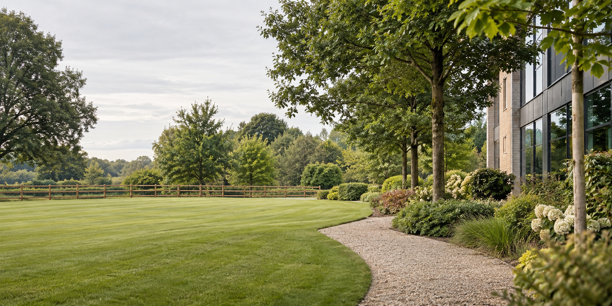

Housing estates
Shared external spaces and the practical details of ongoing grounds care.
Manchester, Greater Manchester
A focused site-survey route for housing estates, schools, industrial sites and landlord properties — shaped around the work that matters to your grounds.
Request a site surveyFor recurring grounds care, fencing, clearance and tree care.

Start with the setting
A short brief lets the survey conversation begin with the right context, without trying to force every site into the same enquiry.
Shared external spaces and the practical details of ongoing grounds care.
Outdoor areas that need a clear, considered starting point for a survey.
Commercial surroundings, boundary work and site-clearance needs.
Outdoor maintenance requests framed around the property and its priorities.
Choose the workstream
Select the area you need to discuss first. The form below keeps the request simple and specific.
For planned, ongoing attention to shared and commercial outdoor space.
For boundaries and fencing requirements at the site.
For outdoor areas that need clearing as part of the next step.
For tree-related work you would like to raise during a survey.
The survey brief
Choose the property type and add the location or postcode.
Pick the service area you want to discuss first.
Share useful context and a preferred time for the site conversation.
Survey request
This demonstrator keeps your details in this browser. It does not submit or transmit the form.
Public business telephone
+44 7954 093034McCorkell's Gardens and Grounds Ltd
Manchester, Greater Manchester